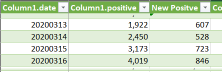
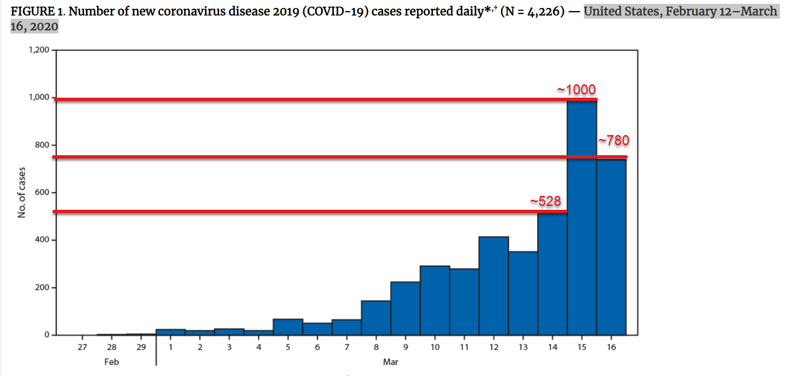

Daily new case number discrepancy between this site and CDC info
Issue number 15
dimitrilucas opened this issue on March 18, 2020 at 7:04 pm
Hello,
I’m writing because there seems to be a discrepancy between the number of daily new US cases on your site vs the CDC website. According to my calculations based on numbers reported on https://covidtracking.com/us-daily/, there were 528, 723, 846 new positive cases reported on March 14, 15 and 16. Here is a screenshot of those dates and numbers: 
The CDC’s website shows a chart with different numbers for the 15th and 16th.
https://www.cdc.gov/mmwr/volumes/69/wr/mm6912e2.htm?s_cid=mm6912e2_w#F1_down

As you can see, the CDC chart doesn’t show the exact numbers. However, I drew red lines to show the approximate numbers for each bar for the last three days. The number for the new positives on the 14th seems to be the same, ~528. However, the CDC charted values aren’t close to what the covidtracking website is reporting for the 15th and 16th. Looks like ~1,000 for the 15th and ~780 for the 16th. Some of the other dates appear to be a mismatch as well.
I am wondering if there is something I am missing, or if there is a mistake in one of the website’s calculations.
Also I find the CDC’s data rather opaque and confusing. There is no way to know exactly where it is coming from or what their update process is, nor an issue tracker to leave questions or suggestions…
Man there is just not an emoji to appropriately respond to this.
hey @dimitrilucas thanks for the question!
it may be because our daily numbers are as of 4 pm ET. the total number on 3/16 for us was 4,019 while the cdc has 4,226, so we’re definitely in the same ballpark. states report their data at different times on different days so i wouldn’t focus too much on the precise number each day. a trend line would be more useful.
for more details on our methods, see https://covidtracking.com/newsroom-expert-faq.